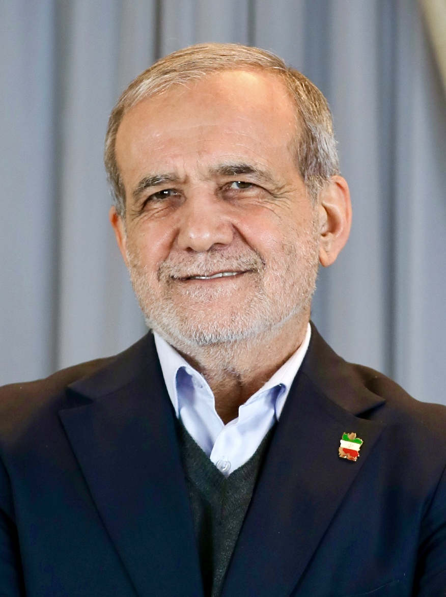

Iranian President Masoud Pezeshkian: 'Muslims should unite rather than split into two camps'
In an Al Jazeera interview, Iran's president spoke about Muslim unity, his readiness to join a 'Mecca alliance', and regional security.

Iranian President Masoud Pezeshkian gave a roughly 40-minute interview to Al Jazeera World (published 20 October 2026). He spoke about sanctions, the Strait of Hormuz, Iran's retaliatory strikes on US military bases in the Gulf, the wars in Gaza and Yemen, the new Syrian government, and relations with Russia and China.
Readiness to join a 'Mecca alliance'
According to Pezeshkian, Iran is ready to take part in what has been reported as a 'Mecca alliance' comprising Türkiye, Saudi Arabia and Pakistan, though he said Tehran does not yet know its details. 'We are ready to take part in this process,' the president said.
Muslim unity and regional security
The president stressed that Muslim states should unite rather than split into two camps and fight one another. In his words, regional security should be provided by the states of the region themselves, not by outside powers coming from the other side of the world.

Iran's position
In the interview Pezeshkian portrayed Iran as a victim of 'terrorism' and said broken agreements had destroyed trust in Washington. These remarks are the president's statements in the interview and reflect one side's position.